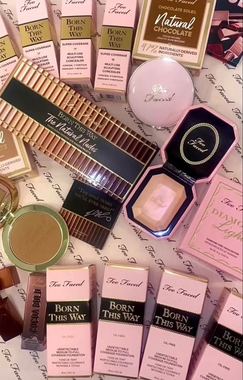
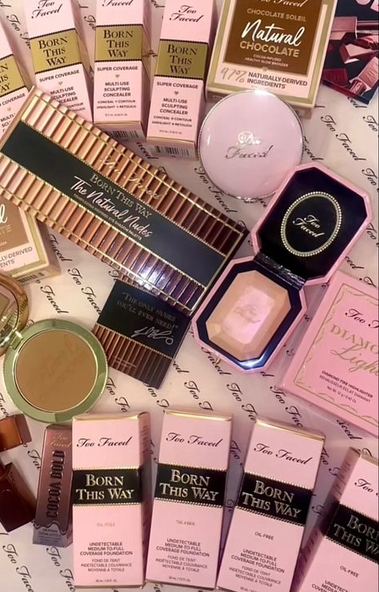

Welcome to Too Faced
Random TF products
Popular cosmetics brand Too Faced is widely recognized for both it's high-quality products and fun, colorful design. In 1998 Jeremy Johnson and Jerrod Blandino lanuched Too Faced cosmetics. Blandino's apartment function as the duo's first production space.

TF Products
 
